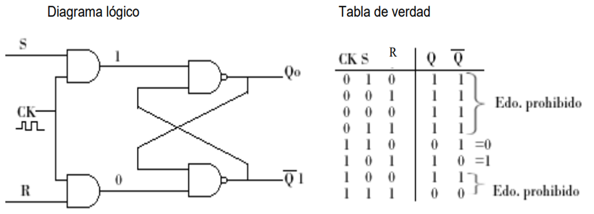
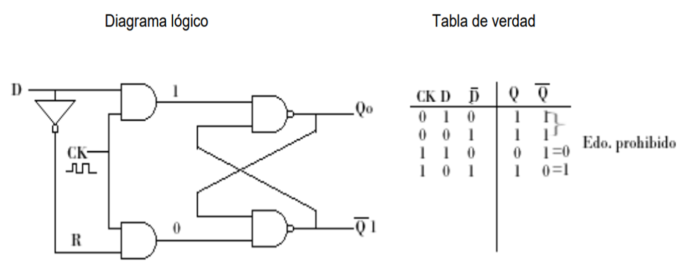

Los circuitos secuenciales sincrónicos que usan pulso de reloj en las entradas de los elementos de
memoria se llaman circuitos secuenciales temporizados. Los elementos de memoria utilizados en los
circuitos secuenciales temporizados se llaman Flip-Flops. Estos circuitos son celdas binarias capaces de
almacenar en bit de información. Todo circuito Flip-Flop tiene 2 salidas (de aquí el nombre de biestable),
una para el valor normal (Q) y otra para el valor complemento .
- Flip-Flop SR
- Flip-Flop D
- Flip-Flop JK
Flip-Flop SR
Este tipo de Flip-Flop tiene 2 entradas una S (set) y otra a R (reset) set puesta 1 y reset puesta 0. Este
Flip-Flop tiene 2 salidas (Q y ). También se le conoce Flip-Flop set-reset o bloqueador SR (SR Latch).
La salida es el complemento (el estado lógico opuesto) de la otra salida Q. Para que un circuito sea
capaz de registrar o recordar uno de 2 estados posibles; es necesario que el circuito combinacional
tenga una “retroalimentación” de sus salidas con respecto a sus entradas, para “recordarle” al propio
circuito su salida. A continuación se ilustra lo anterior por medio de 2 compuertas NAND.

Otras de la modificaciones realizadas al flip-flop SR, fue darle la capacidad de ser borrado (CLR) ó
activado (St ó PR) de una manera asíncrona a fin de ponerle en un estado inicial. Ambas señales de
control se activan con un 1 lógico.
Flip-Flop D
Este Flip-Flop recibe su nombre por la habilidad de transmitir datos, es básicamente un flip-flop SR con un inversor en
la entrada R. El inversor agregado reduce el número de entradas de dos a una. Este tipo de flip-flop se
llama a veces “bloqueador D con compuertas” ó “flip-flop de bloqueo”. La entrada CK se le da a menudo
la designación variable G (de gate) para indicar que ésta entrada habilita el flip-flop de bloqueo para
hacer posible que los datos entren al mismo. Los flip-flops tipo D también pudieran tener las entradas de
borrado (CL) y activado (St) que funcionan de la misma manera que para los flip-flops SR. Ejemplo de un
CI es el 7474 (con 2 flip-flops) y el 7475 (con 4 flip-flops).

Flip-Flop JK
Es un refinamiento del SR ya el estado indeterminado del tipo SR se define en el tipo JK. La notación JK
se usa simplemente para distinguir este tipo de flip-flop del tipo SR. Las entradas J y K se comportan
como las entradas S y R, donde la letra J se usa para la entrada de puesta a 1 y la letra K para la
entrada de puesta a 0. Cuando ambas entradas se aplican a J y K simultáneamente, el flip-flop cambia a
su estado complemento, esto es si Q=1 cambia a Q=0 y viceversa. Las entradas J y K son entradas
sincronizadas. Esto significa que no tiene ningún efecto en la salida hasta que la entrada de reloj reciba
la señal apropiada. Un ejemplo de CI es el 7476 (con 2 flip-flops).